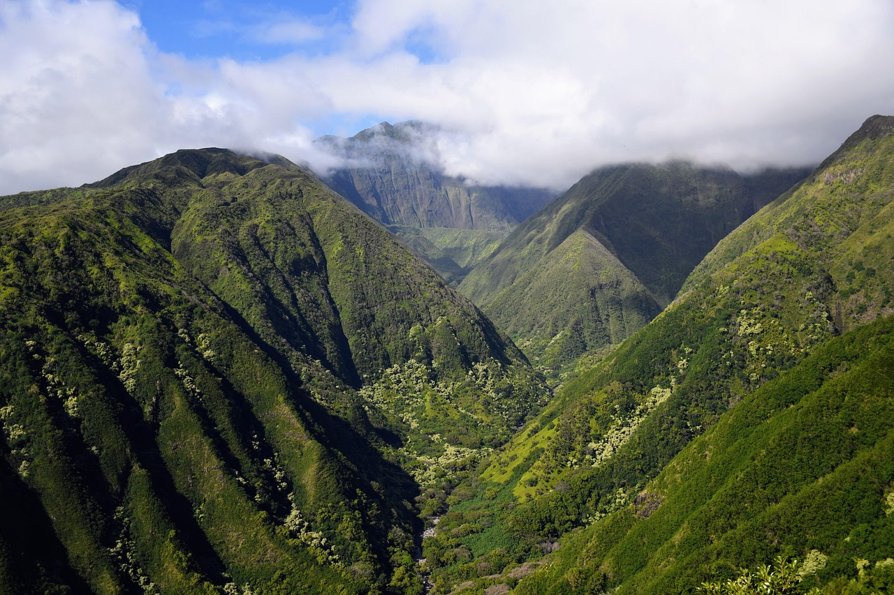
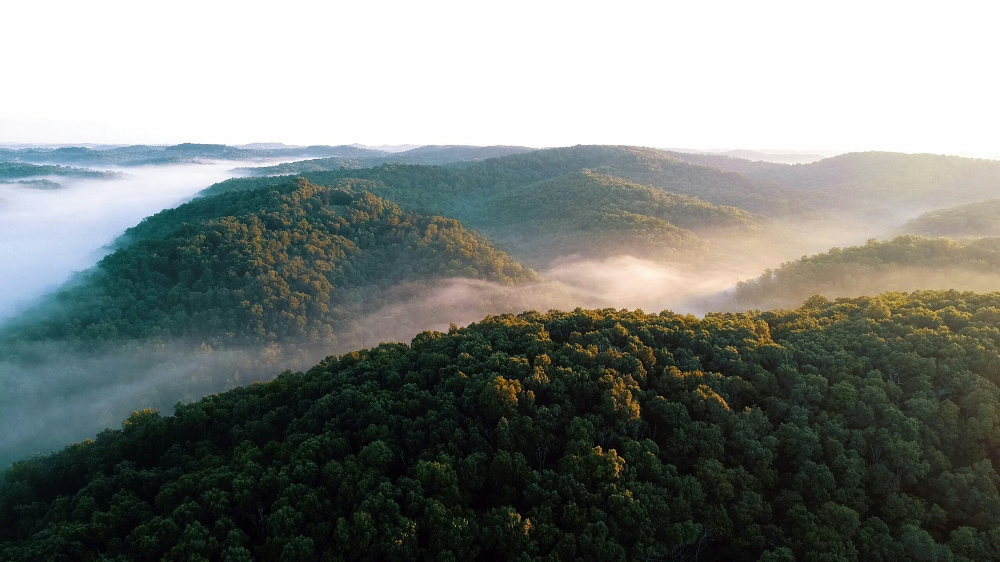

Eksplorasi Keindahan Alam Liar
Temukan ketenangan di pegunungan yang diselimuti kehijauan abadi.
Jelajahi SekarangDestinasi Puncak



Mari Abadikan Momen Terbaik Anda!
Lihat galeri foto kami dan rencanakan petualangan Anda selanjutnya.
Kunjungi Galeri